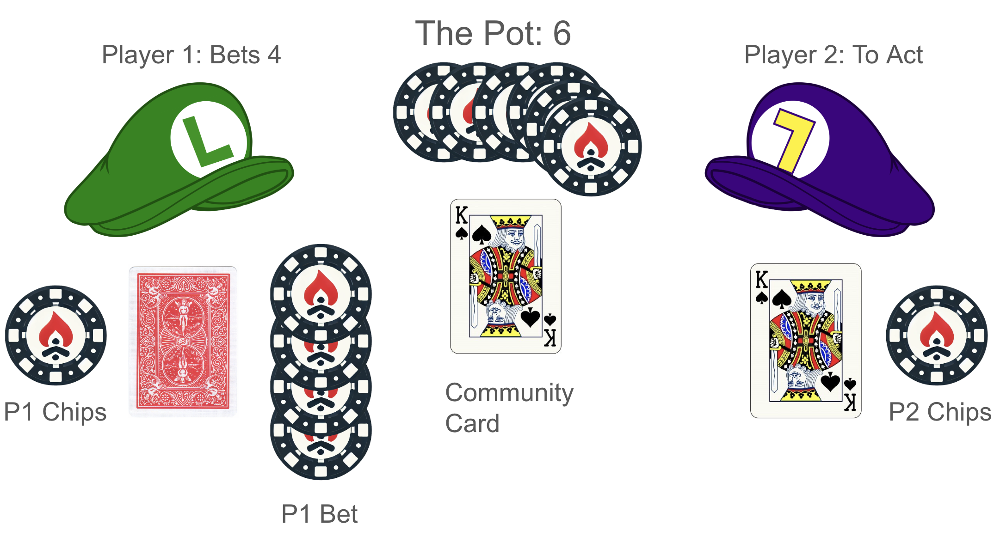

#2: Leduc Poker | Challenge
Leduc Poker Rules
Leduc Poker is a simple toy poker game invented at the University of Alberta.
Here is the setup:
6 card deck: 2 Queens, 2 Kings, 2 Aces (in ascending order, so Ace is highest)
Leduc Poker is played with 2 players
Each player antes 1 chip
Deal 1 card to each player
Betting round 1 (preflop):
- There is a fixed bet size of 2 chips
- Rule in original version: There is a maximum of 2 bets per round (i.e. a bet and a raise)
Deal a face up community card
- Players make the best 2 card hand combining their card and the community card, meaning a pair is the best possible hand
Betting round 2 (the flop):
- There is a fixed bet size of 4 chips
- Rule in original version: There is a maximum of 2 bets per round (i.e. a bet and a raise)
Here is a game situation in which:
- Both players anted 1 each
- Pot = 2
- Preflop: P1 bets 2 and P2 calls
- Pot = 6
- Flop: Community card K revealed. Player 1 bets 4. Player 2 to act.

Kuhn Poker 100 Cards
Kuhn Poker with 100 cards plays the same as Kuhn Poker with 3 cards, but the cards are numbered from 1 to 100 (or 0 to 99).
Card Abstraction
100 card Kuhn Poker is a good testbed for card abstraction. Card abstraction is a method for shrinking a large game to a more manageable size. Bet abstraction is another (but since we are only using fixed bet sizes, this is currently not applicable).
Solver
Prebuilt solver options
- infosets (example in solver) (P1)[0, None][Down, Up]: {Down: 1.0, Up: 0.0} (P1)[0, None][] : {Down: 0.8150489886962787, Up: 0.1849510113037213} (P1)[1, None][Down, Up]: {Down: 0.36837888738186775, Up: 0.6316211126181323} (P1)[1, None][] : {Down: 0.8131365930381713, Up: 0.18686340696182863} (P1)[2, None][Down, Up]: {Down: 0.0, Up: 1.0} (P1)[2, None][] : {Down: 0.37332197949312035, Up: 0.6266780205068797} (P2)[None, 0][Down] : {Down: 0.7737705468066861, Up: 0.22622945319331383} (P2)[None, 0][Up] : {Down: 1.0, Up: 0.0} (P2)[None, 1][Down] : {Down: 0.9714280084961201, Up: 0.028571991503879877} (P2)[None, 1][Up] : {Down: 0.35544435642226935, Up: 0.6445556435777307} (P2)[None, 2][Down] : {Down: 0.0, Up: 1.0} (P2)[None, 2][Up] : {Down: 0.0, Up: 1.0}
| Player | Cards | Actions | Strategy |
|---|---|---|---|
| P1 | [0, None] | [Down, Up] | {Down: 1.0, Up: 0.0} |
| P1 | [0, None] | [] | {Down: 0.8150489886962787, Up: 0.1849510113037213} |
| P1 | [1, None] | [Down, Up] | {Down: 0.36837888738186775, Up: 0.6316211126181323} |
| P1 | [1, None] | [] | {Down: 0.8131365930381713, Up: 0.18686340696182863} |
| P1 | [2, None] | [Down, Up] | {Down: 0.0, Up: 1.0} |
| P1 | [2, None] | [] | {Down: 0.37332197949312035, Up: 0.6266780205068797} |
| P2 | [None, 0] | [Down] | {Down: 0.7737705468066861, Up: 0.22622945319331383} |
| P2 | [None, 0] | [Up] | {Down: 1.0, Up: 0.0} |
| P2 | [None, 1] | [Down] | {Down: 0.9714280084961201, Up: 0.028571991503879877} |
| P2 | [None, 1] | [Up] | {Down: 0.35544435642226935, Up: 0.6445556435777307} |
| P2 | [None, 2] | [Down] | {Down: 0.0, Up: 1.0} |
| P2 | [None, 2] | [Up] | {Down: 0.0, Up: 1.0} |
For a given P1 strategy and P2 strategy, a player has regret when they take an action at an infoset that was not the highest-EV action at that infoset. The amount of regret is the difference between the highest-EV action and the selected action.
Solving Poker Games
Typically solving a 2-player poker game is defined as finding a Nash equilibrium strategy for both players. This is straightforward to define, but means that we are finding a fixed strategy that doesn’t adapt to opponents, which we think is less exciting and also less profitable in many cases.
Small poker games can be solved through linear programming given a matrix of strategies at each information set and a matrix of payoffs (see here for more details).
As we prepare to solve larger games, we look at iterative algorithms.
The core feature of the iterative algorithms is self-play by traversing the game tree over all infosets and tracking the strategies and regrets at each.
Regret is a measure of how much each strategy at an infoset is preferred.

What is the regret for each action?
| Action | Regret |
|---|---|
| A | |
| B | |
| C |
If taking a uniform strategy at this node (i.e. \(\frac{1}{3}\) for each action), then what is the expected value of the node?
In poker games, the regret for each action is defined as the value for that action minus the expected value of the node. Give the regret values for each action under this definition.
Counterfactual Regret Minimization
The most popular method for iteratively solving poker games is the Counterfactual Regret Minimization (CFR) algorithm.
What is a counterfactual?
Actual event: I didn’t bring an umbrella, and I got wet in the rain
Counterfactual event: If I had brought an umbrella, I wouldn’t have gotten wet
- general algorithm
- store: strategy, regret
- regret matching
- average strategy at end
- CFR+, Linear CFR
- sampling (external, sampling, chance, etc. )